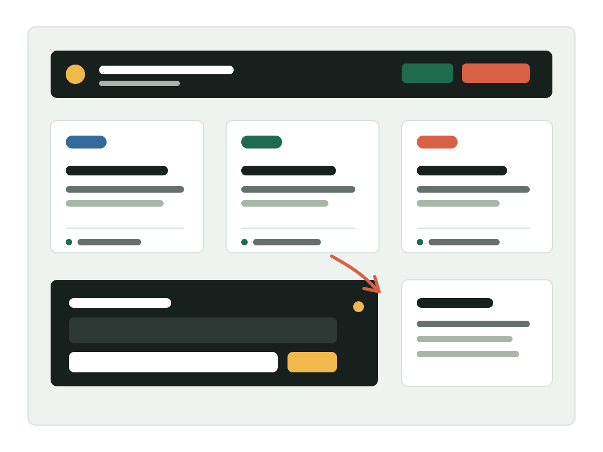

用调研、交互和视觉落地，展示我的 UI/UX 设计能力。
这里会集中呈现我的设计项目、体验分析、能力结构和简历信息。面试官可以快速看到我如何理解用户、拆解场景、设计交互、推动落地并复盘迭代。
UI/UX 设计
B 端体验
用户研究
数据分析

Resume
简历与联系
这里可以放教育经历、实习经历、技能栈、获奖证书和 PDF 简历下载。建议保持精简，把完整判断留给项目详情页。
Agent Ready
预留一个大模型对话入口
后期可以接入你的作品集助手，让面试官围绕设计项目、能力、经历进行问答。当前版本先保留前端交互和接入位置。
UI/UX 作品集助手 · 待接入
Case Studies
项目作品集
每个项目都围绕“问题、用户、交互、视觉、落地、复盘”展开，让面试官看到你的设计思考链路。
UI/UX Skill Map
UI/UX 设计能力结构
把能力拆成面试官能判断的具体行为，而不是停留在抽象评价。
UX Design Notes
UI/UX 设计思考
后续可以放 3-5 篇高质量体验拆解或设计复盘，展示你持续思考的能力。